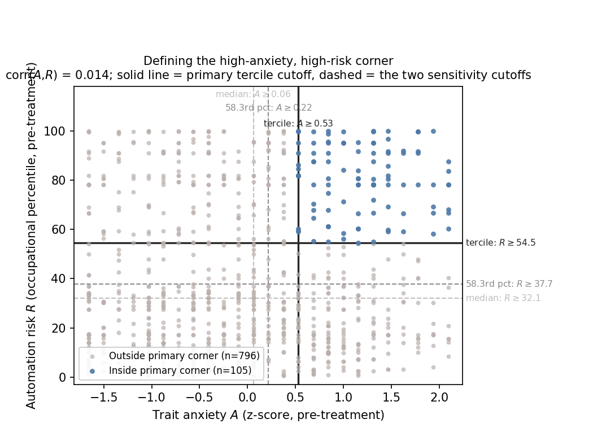

Research design
Three-step belief correction protocol with individualized treatment intensity. 475 treated, 426 control.
| Construct | Operationalization | Role |
|---|---|---|
| Policy demand (η) | 5 items, 7-pt (ω = 0.83), graded response model | Outcome |
| Expert trust (S) | Single 5-pt item, post-treatment, treated arm only | Gate 1 |
| Trait anxiety (A) | 4-item scale, pre-treatment (ω = 0.92) | Gate 2 |
| Automation risk (R) | Own-occupation expert percentile, pre-treatment | Gate 2 |

Both moderators are measured before treatment, so the activation corner is a fixed partition of pre-treatment characteristics rather than an outcome of the manipulation.
Expert trust is observed only in the treated arm. A pre-treatment proxy carries it into both: a random forest on 15 pre-treatment terms predicts the trust rating, a logit on that proxy gives the principal score pi, and arm means are Hájek-weighted by pi for Trusters and 1 − pi for mid/low. Identified under randomization plus principal ignorability.
Research design
The gap is wide in both directions, so the treatment is not a one-sided alarm: roughly as many respondents learn their risk is lower than they thought as higher. Self-reported belief updating tracks the size of the gap, which is what makes it a genuine informational shock rather than a confirmation exercise.
| Scale | Items | α | ω |
|---|---|---|---|
| Policy demand | 5 | 0.826 | 0.832 |
| Trait anxiety | 4 | 0.913 | 0.915 |
| Job automation threat | 4 | 0.930 | 0.929 |
| Economic worry | 3 | 0.706 | 0.727 |
N = 901 throughout. The policy demand battery deliberately spans redistribution, regulation, retraining, labor protections and employment limits, to avoid anchoring to a single ideological frame.
A random forest (500 trees, depth ≤ 10, minimum leaf size 5) is trained on the treated arm to predict the five-point expert-trust rating from 15 pre-treatment terms: education, numeracy, age, race, gender, Democrat and liberal indicators, and the automation-risk percentile, each as a level; the squares of education, numeracy and age; and the interactions age × race, age × education, race × education and numeracy × education.
Its prediction, standardized over the full sample, is the proxy Q̂. Because every input is pre-treatment, Q̂ is defined in both arms. A binary logit of Truster status (trust ≥ 4) on Q̂, fit in the treated arm, then yields pi = Pr(Truster | Q̂i) for every respondent.
The Truster CATE is the difference in self-normalized weighted arm means of η with weights pi; the mid/low CATE uses weights 1 − pi; the stratum contrast is their difference. Nothing post-treatment enters the weights, which is why the same weights can be applied in the control arm.
Identified under randomization plus principal ignorability: pi is a function of pre-treatment covariates only, so the same weights apply in both arms. Uncertainty comes from a bootstrap with B = 2000, resampling within arm, with the proxy, the logit and the weights refit in every replicate.
No covariate difference survives Holm correction. Trait anxiety is the largest standardized mean difference at 0.144 (p = 0.031, Holm p = 0.400), followed by age at 0.120 and ideology at −0.110. Those three are the adjustment set for the covariate-adjusted variant of the trust-stratum estimates.
Principal ignorability is untestable in this design, because expert trust was never measured in the control arm. A design measuring trust before treatment would estimate the missing quantity directly.